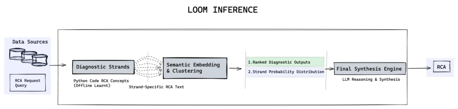
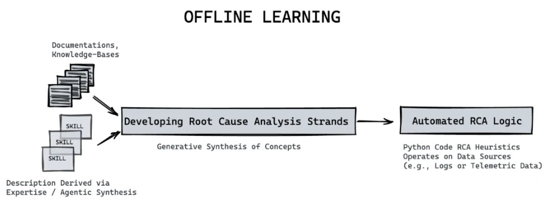

NVIDIA's Loom attempts to address the pain points of industrial RCA using the "loom" metaphor, weaving scattered diagnostic clues into consensus. This idea is quite appealing, but essentially it remains a "patchwork hybrid" of "template + vector", attempting to evade LLM uncontrollability through mathematical means. The advantage is pulling the LLM back from the "debate arena" to the "assembly line", with speed increased by 26 times, truly appealing, especially suitable for latency-sensitive industrial scenarios. The disadvantages are also obvious: single-round synthesis is prone to failure in complex scenarios, performs poorly when encountering multiple candidate confusions, relies on preset rules, gets stumped by "black swan" faults, and lacks exploration capability. Do not expect it to adapt flexibly like human experts; it is more like a highly optimized automated script, merely wearing the wrapper of an LLM. For industrial scenarios pursuing extreme robustness, this solution is a pragmatic compromise, not a disruptive breakthrough, suitable for environments with many known fault patterns, not suitable for unknown domain exploration.
研究动机Motivation
工业界 RCA 面临两难：大模型代理（Xu et al., 2025）虽灵活但慢且易幻觉，上下文窗口限制导致推理中断，成本高昂。传统弱监督（Ratner et al., 2017）虽快但只能处理离散标签，无法聚合自由文本，结构上无法处理开放形式语义。现有方法要么在无限搜索空间里迷路，要么在数学约束下失语。核心矛盾在于如何在不依赖昂贵迭代推理的前提下，对开放形式的文本假设进行数学上的去噪与聚合。Loom 试图填补这一空白，将冲突解决从 LLM 循环移至连续向量空间，以满足工业界对延迟、成本和可审计性的严苛要求，同时保留生成式模型的表达能力。
Industrial RCA faces a dilemma: Large model agents (Xu et al., 2025) are flexible but slow and prone to hallucinations; context window limitations cause reasoning interruptions, and costs are high. Traditional weak supervision (Ratner et al., 2017) is fast but can only handle discrete labels, cannot aggregate free text, and structurally cannot handle open-form semantics. Existing methods either get lost in infinite search spaces or become mute under mathematical constraints. The core contradiction lies in how to perform mathematical denoising and aggregation on open-form text hypotheses without relying on expensive iterative reasoning. Loom attempts to fill this gap, moving conflict resolution from the LLM loop to a continuous vector space, to meet industrial demands for latency, cost, and auditability, while retaining the expressive power of generative models.
The Loom framework is divided into three steps. First is Diagnostic Bundles (DSs), i.e., programmatic heuristic rules, outputting templated text with slots rather than discrete labels, generated by experts or offline LLMs. Second is the Iterative Embedding-Centroid Reweighting Algorithm, projecting DS outputs into vector space, calculating weighted centroids and iteratively updating weights to automatically align consensus signals and suppress outliers; this step is fully mathematical, requiring no LLM participation, taking milliseconds. Finally is the Synthesis LLM, receiving only denoised ordered evidence for single-round generation, avoiding hallucinations. The innovation lies in transforming "debate" into "geometric alignment", using cosine similarity to replace LLM critical reasoning, significantly reducing computational costs. Additionally, the system includes static redundancy detection, but experiments found this may over-compress the candidate set, requiring dynamic adjustment.

Figure 1: The Loom inference pipeline. Diverse data sources are evaluated by programmatic Diagnostic Strands that emit templated, episode-specific Root Cause Analysis (RCA) hypotheses. These outputs undergo semantic embedding and centroid reweighting to identify the most reliable consensus, yielding an importance weighting and similarity map over the strands. Finally, a synthesis LLM reasons over the ranked diagnostic outputs and generates a cohesive final RCA report.

Figure 4: The offline learning process for generating Diagnostic Strands. An LLM agent ingests diverse sources of information, such as system documentation and Subject Matter Expert (SME) skills, to automatically extract and generate programmatic RCA heuristics (DSs) that operate on structured data sources.
Tested on the OpenRCA benchmark, including Bank, Market, and Telecom datasets, compared with RCA-Agent. Loom achieves parity in accuracy on Bank and Market-2, but inference speed is 26 times faster (1 LLM call vs 62 times), and supports small parameter models. Accuracy is slightly lower on Market-1 and Telecom, mainly limited by single-round synthesis difficulty in disambiguation; Oracle analysis indicates the consensus algorithm can correctly rank candidates, with the bottleneck lying in the final LLM synthesis step. Ablation experiments show the reweighting algorithm contributed approximately 5.88% accuracy improvement, but static redundancy detection may instead lower performance, suggesting rule library maintenance requires caution. Overall located on the accuracy-efficiency Pareto frontier, proving the value of engineering compromise.